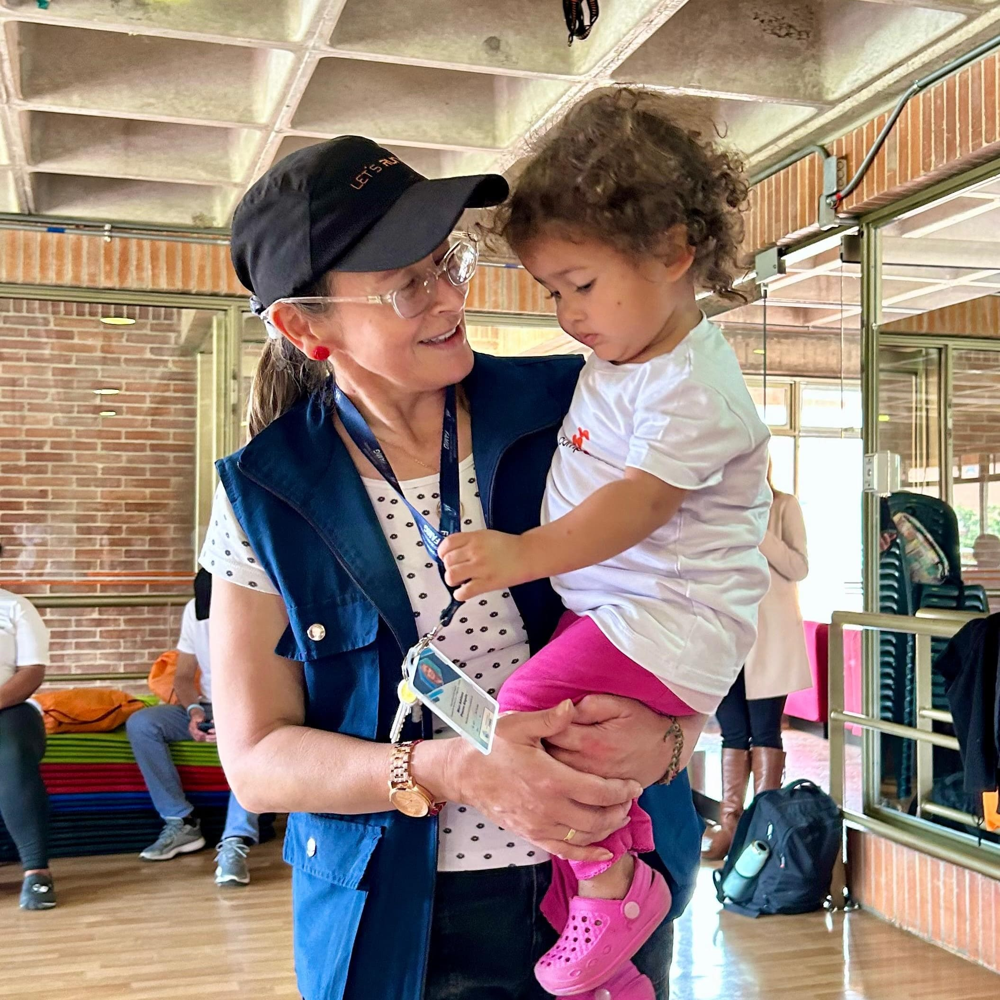
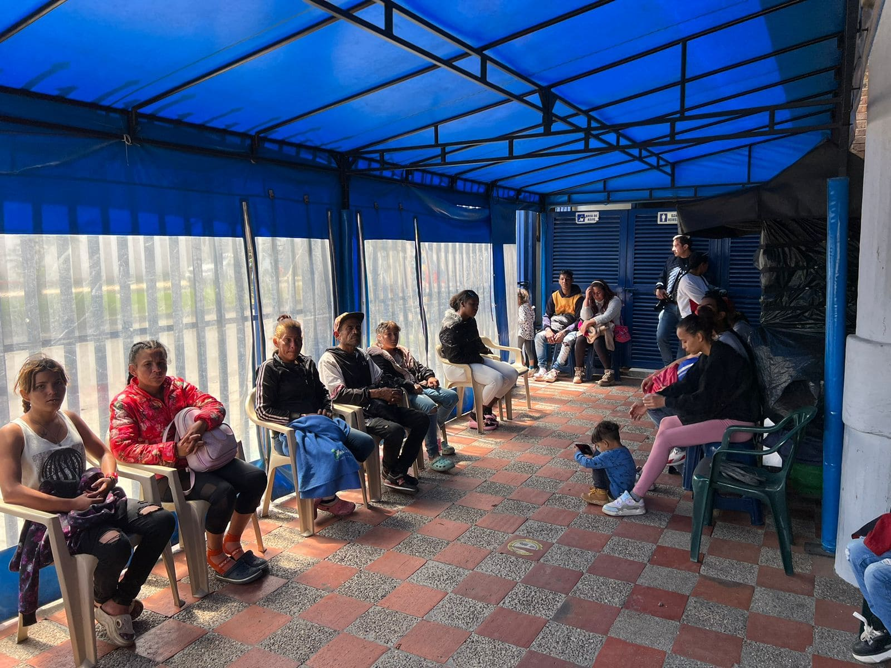
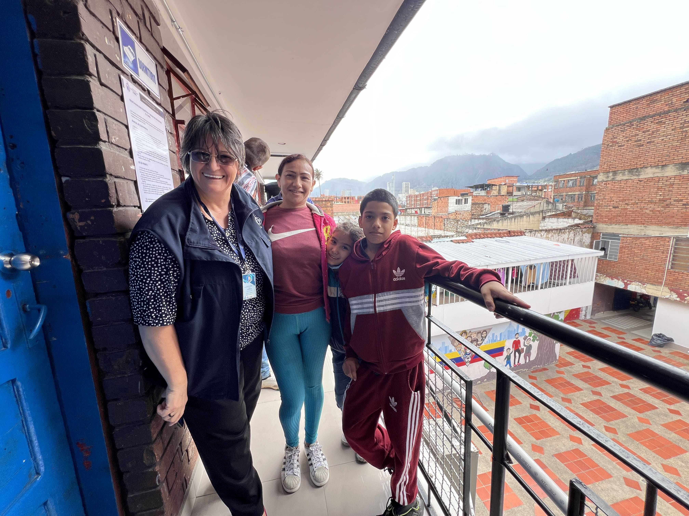
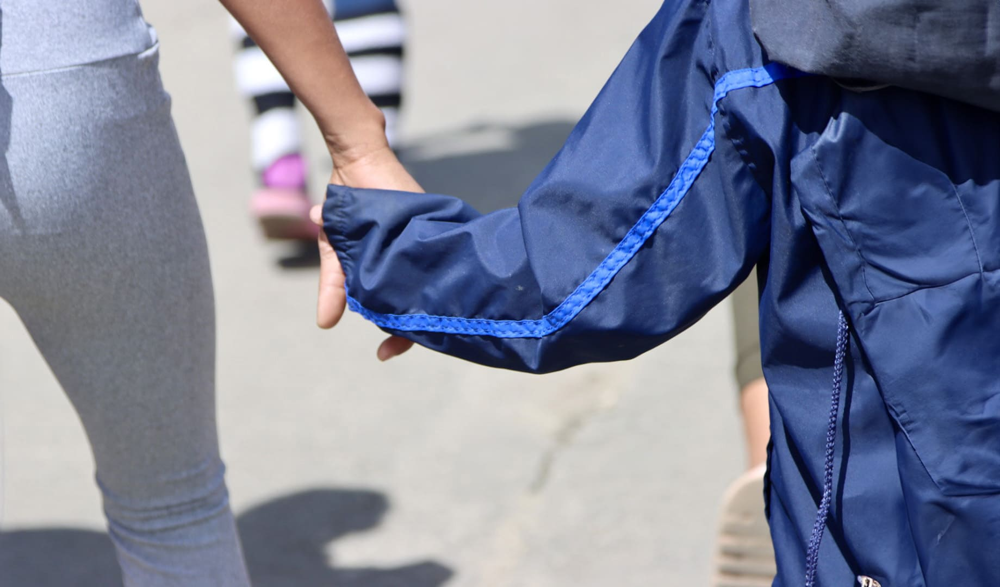
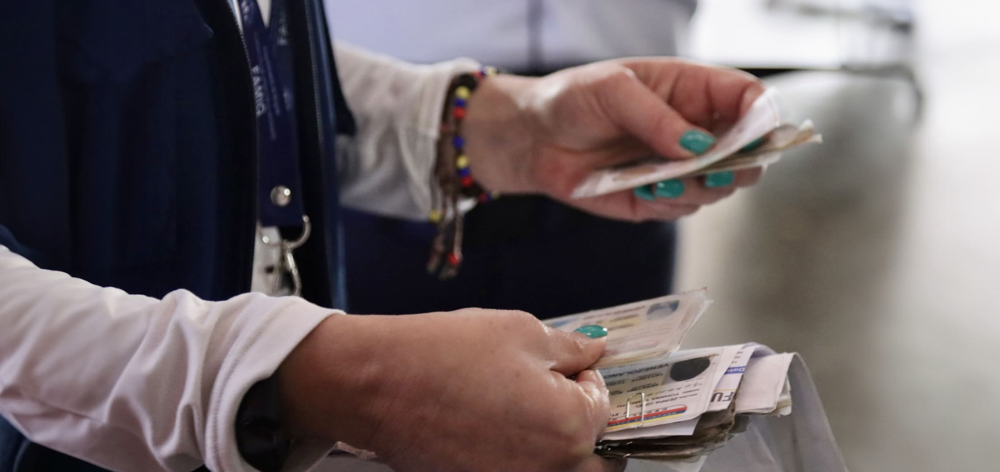
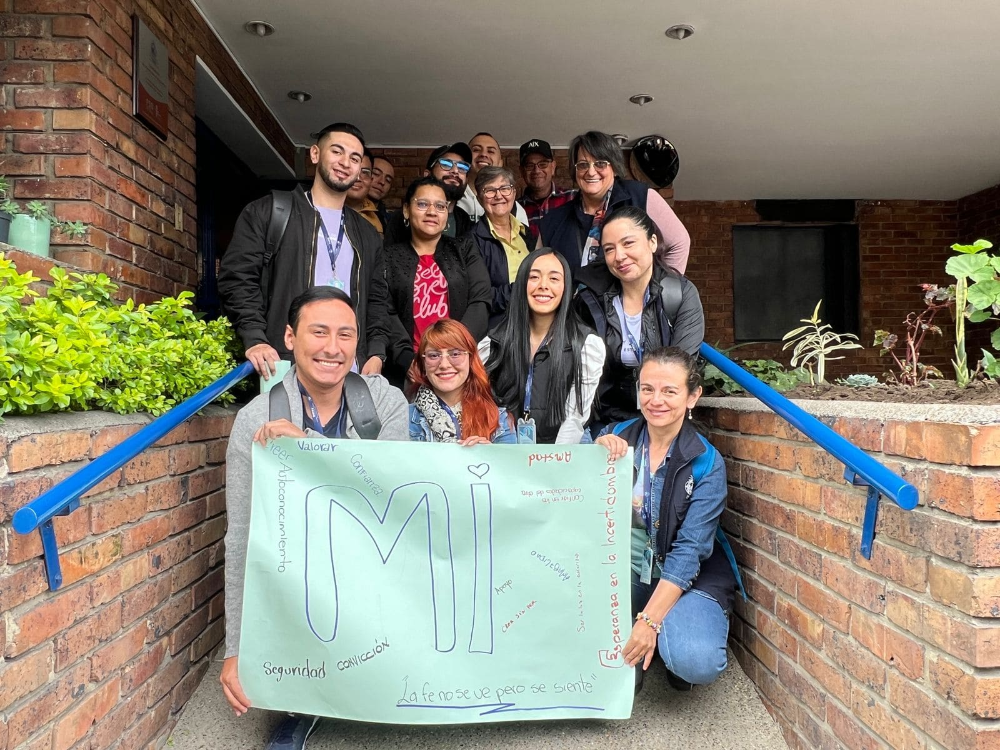
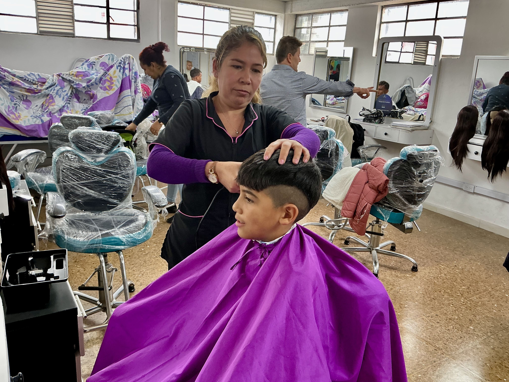

Fotografía Profesional
Desde la Fundación FAMIG, capturo historias reales que reflejan resiliencia, dignidad y esperanza. A través de mi lente, documento momentos significativos del trabajo con población migrante: procesos de formación, atención a la infancia, jornadas humanitarias y vínculos comunitarios. Cada fotografía busca visibilizar, sensibilizar y movilizar. Aquí una muestra de mi trabajo.
1
 2
2
 4
4
 5
5
Curso de Estética Capilar

3
Acompañamiento en la infancia
Protección integral para niñas y niños
Celebración institucional

6
Atención a población en situación de vulnerabilidad

7
Apoyo a familias migrantes

8
Caminando con ellas y ellos

9
Documentación y regularización

10
Comunidad y valores compartidos
